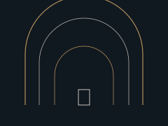
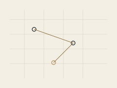

Conscious Mirror
A practice of noticing how inner life appears in outer circumstance. Journals, decks, and quiet exercises for watching the mind without turning it into a problem to be solved.
Atlas Relics
A quiet catalog of practices and objects for people who want a clearer relationship with their own mind. The work sits between psychology, contemplation, and older wisdom traditions, without asking you to believe anything you cannot test in experience.
Atlas Relics gathers maps and artifacts for people who already suspect that the inner life is real work. Some visitors want a book they can annotate. Some want a course with a beginning and an end. Some want a single hour of conversation. The catalog is arranged so you can tell those things apart.
We write from psychology, from reflection, and from the older languages that treated mind as territory. We do not diagnose you. We do not promise a new self by Friday.
Three named lines
Courses, readings, books, and digital tools sit beside them. All of it belongs to Atlas Relics.
A practice of noticing how inner life appears in outer circumstance. Journals, decks, and quiet exercises for watching the mind without turning it into a problem to be solved.

Guided descent into older rooms of the psyche. Audio, writing, and study sequences for sitting with what is usually hurried past, at a human pace.

A way of drawing repeating shapes in thought, relationship, and choice. Workbooks and sessions that help you see a pattern. They do not name you with a diagnosis.
Longer study with essays and exercises over weeks, meant to be returned to rather than consumed.
One-to-one reflective conversations with a clear frame and an equally clear limit.
Long-form maps of consciousness, myth, and the inner life, written to be read slowly.
Downloadable field notes, workbooks, and practice aids you can keep on your own shelf.
Not therapy, not fortune-telling, and not a verdict on your character. If a conversation would be useful, you can request a time. If an object would be more useful, the catalog is open.